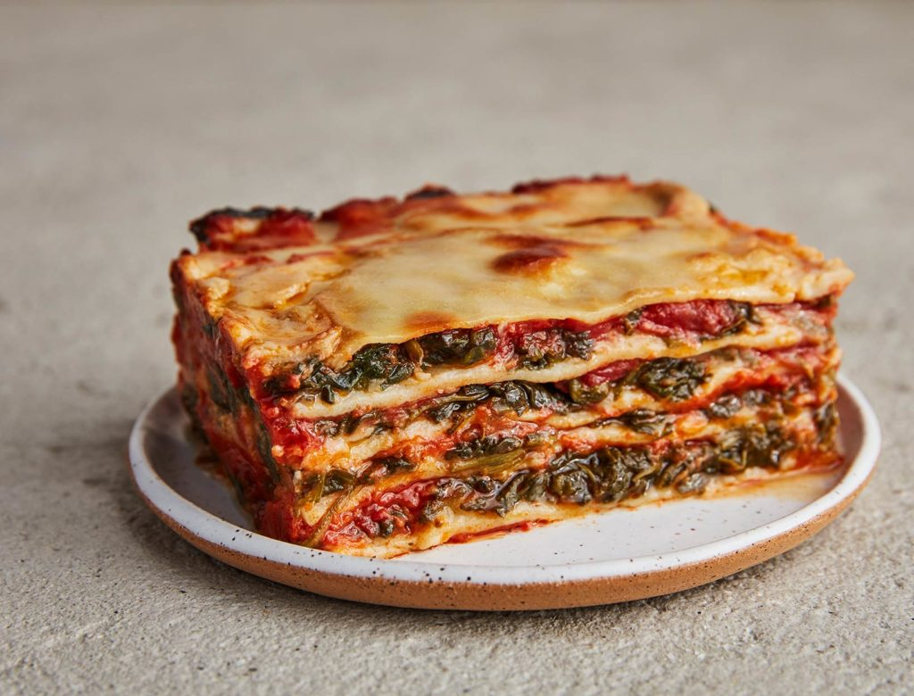

Lasagna

Description
Lasagna is a wide, flat sheet of pasta. Lasagna can refer to either the type of noodle or to the typical lasagna dish which is a dish made with several layers of lasagna sheets with sauce and other ingredients, such as meats and cheese, in between the lasagna noodles.
Ingredients
- 3/4 lb. lasagna noodles
- 1 tsp. extra-virgin olive oil, plus more for drizzling
- 2 lb. ground beef
- 4 cloves garlic, minced
- 2 tsp. dried oregano
- Kosher salt
- Freshly ground black pepper
- 2 (32-0z.) jars marinara
- 16 oz. whole milk ricotta
- 1/2 c. freshly grated Parmesan, divided
- 1/4 c. chopped parsley, plus more for garnish
- 1 large egg
- 2 lb. sliced mozzarella
Steps
- Don't overcook your noodles. Lasagna noodles need structure—they have a lot of ingredients layered between them!—so they can't be too mushy. Make sure to cook them until they're very al dente; they're ready typically two minutes before the amount of time on the box. Oil 'em up. While you're making your beef and ricotta mixtures, your lasagna noodles will typically be hanging out in a colander, getting stuck together (worst nightmare). To prevent this, after you drain the noodles from the pasta pot, slick them with olive oil and lay them flat on a baking sheet to cool. Get your favorite marinara. We decided to go with store-bought marinara for this recipe but it doesn't mean you should pick any old jar off the shelf. Even though there are tons of layers and flavors in lasagna, the marinara is the back bone of the dish. Spending a couple more bucks on your favorite brand is worth it in this case. Drain beef. Sometimes we're a little lazy and skip this step when making a meat sauce and we always regret it—the sauce tastes so greasy! Draining the fat from the skillet is a must for your lasagna layers, which will already have a lot of fat from cheese. Season your ricotta mixture.
- My Italian grandmother always added a secret ingredient to her lasagna: cinnamon. The ricotta mixture always gets overlooked and, therefore, tastes kinda bland. Make sure to season it generously with salt and pepper—Parm, too! Don't bake for too long. Lasagna is one of those dishes that firms up a lot as it sets. Even though it might look like a cheesy, bubbly mess in the oven, if it's warmed all the way through it will be perfect once you let it sit for at least 15 minutes. When you over bake the pasta, you run the risk of the noodles drying out and getting too crispy. What can I make in advance? The whole dang thing! The best part about lasagna is how beautifully it freezes. Assemble it fully (I like to wait to put the very last layer of cheese on until ready to bake) and then wrap up tightly in plastic wrap and foil and freeze. It will keep up to 3 months in the freezer. When you are ready to bake, unwrap, top with cheese, cover back with foil and bake as directed.
- It may need some extra time in the oven! You can also thaw out in the fridge the night before you plan to bake. If you don't want or have room to freeze you have a couple other options for prepping your lasagna ahead of time. You can fully assemble the lasagna and refrigerate for up to 2 days ahead of time. Pop it into the oven straight from the fridge! You can also make your sauce ahead of time, which will still save you a bit of time. Cook your ground beef and stir in marinara. Let this cool down and then store in the refrigerator for up to 4 days. You can use the sauce straight from the fridge when ready to assemble!